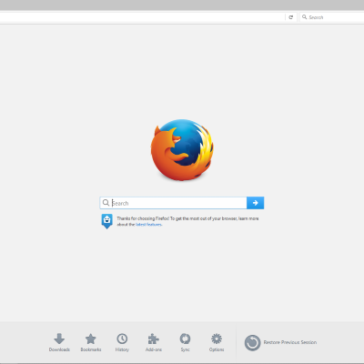

Mozilla Firefox, or simply Firefox, is a free and open-source[22] web browser developed by the Mozilla Foundation and its subsidiary, the Mozilla Corporation. Firefox uses the Gecko layout engine to render web pages, which implements current and anticipated web standards.[23] In 2017, Firefox began incorporating new technology under the code name Quantum to promote parallelism and a more intuitive user interface.
Firefox implements many web standards, including HTML4 (almost full HTML5), XML, XHTML, MathML, SVG 2 (partial),[62][63] CSS (with extensions),[64] ECMAScript (JavaScript), DOM, XSLT, XPath, and APNG (Animated PNG) images with alpha transparency.[65] Firefox also implements standards proposals created by the WHATWG such as client-side storage,[66][67] and the canvas element.[68] These standards are implemented through the Gecko layout engine, and SpiderMonkey JavaScript engine. Firefox 4 was first biggest release towards supporting HTML5 and CSS3.
Firefox has passed the Acid2 standards-compliance test since version 3.0.[69] Mozilla had originally stated that they did not intend for Firefox to pass the Acid3 test fully because they believed that the SVG fonts part of the test had become outdated and irrelevant, due to WOFF being agreed upon as a standard by all major browser makers.[70] Because the SVG font tests were removed from the Acid3 test in September 2011, Firefox 4 and greater scored 100/100.[71][72] Firefox also implements "Safe Browsing,"[73] a proprietary protocol[74] from Google used to exchange data related with phishing and malware protection.